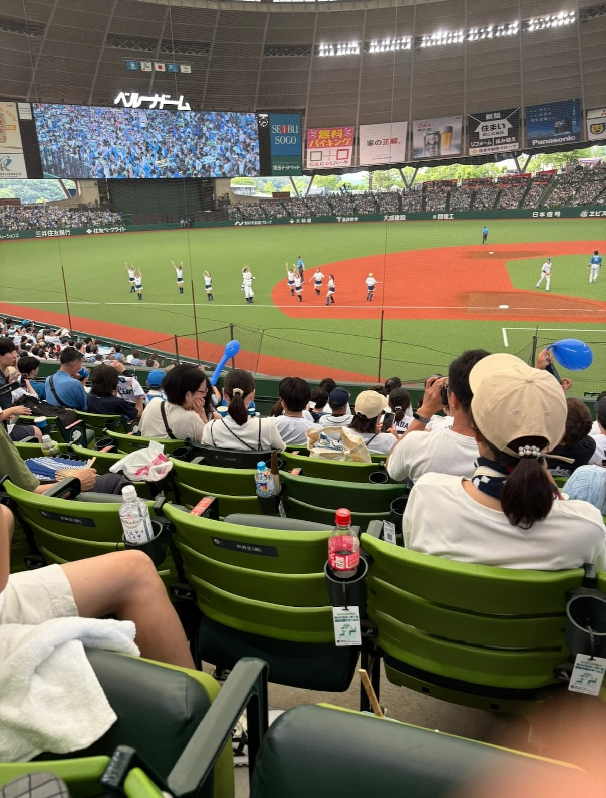
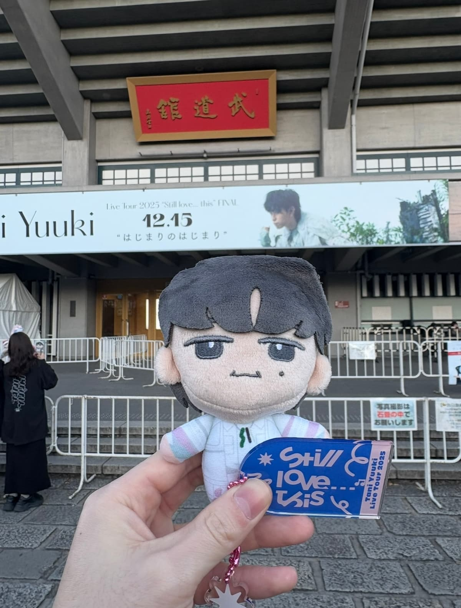

ABOUT 私について
斎藤 奨大
1996年5月3日生まれ、埼玉県出身の30歳です。臨床工学技士として透析医療に携わったあと、副業で始めたアフィリエイトでマーケティングの面白さを知りました。
休日はベルーナドームでライオンズを応援したり、好きなアーティストのライブに行ったりしています。
PROFILE
| 生年月日 | 1996年5月3日（30歳） |
|---|---|
| 出身 | 埼玉県 |
| 学生時代 | 陸上部 400m／4×400mリレー 関東大会出場 |
| 前職 | 臨床工学技士（人工透析／約4年半） |
| 現在 | データコンサルタント |
野球観戦

埼玉西武ライオンズのファンです。チャンステーマ4が流れる瞬間の、球場が一つになっている感じがとても好きです。
好きなアーティスト

Tani Yuukiの大ファンです。去年は武道館のライブに行ってきました。「W/X/Y」と「Myra」は、気分が沈んだときによく聴きます。